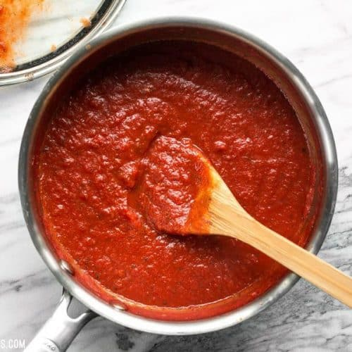

Pizza Sauce

Description
Delicious home-made pizza sauce. A little sweet a little spicy.
Ingredients
- 1 6oz Can of Tomato Paste
- 6oz Warm Water
- 3tbs Parmesan Cheese
- 2tbs Honey
- 1tsp Minced garlic
- 3/4tsp Onion Powder
- 1/4tsp Dried Oregano
- 1/4tsp Dried Marjoram
- 1/4tsp Dried Basil
- 1/4tsp Ground Black Pepper
- Cayenne Pepper to taste
- Red Pepper Flakes to taste
- Salt to taste
Steps
- Combine ingredients in mixing bowl
- Let sit for a least half an hour
- Add to your favorite dough and toppings
- Leftovers can be frozen or refrigerated
Home Page